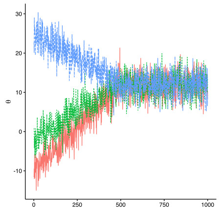

BL6024 - Quantitative Skills for Biologists using R
Lecture 10: An Introduction to Bayesian Statistics
Contents
- A bit of history
- Priors and posteriors
- Bayesian vs. Frequentist
- The machinery of Bayesian statistics
- Bayesian statistics in
R - Practical examples
History of Bayesian statistics
- Bayes' rule
\[ p(x,y) = p(x|y) \times p(y) \] \[ p(x,y) = p(y,x) \]
History of Bayesian statistics
- Bayes' rule
\[ p(x,y) = p(x|y) \times p(y) \]
\[ p(x,y) = p(y,x) \]
\[ p(y|x) = \frac {p(x|y) \times p(y)}{p(x)}\]
History of Bayesian statistics
- Bayes' rule
\[ p(x,y) = p(x|y) \times p(y) \]
\[ p(x,y) = p(y,x) \]
\[ p(y|x) = \frac {p(x|y) \times p(y)}{p(x)}\]
- Use in statistical inference
Priors and posteriors
\[ \color{darkgreen}{p(\theta|x)} = \frac { \color{darkred}{p(x|\theta)} \times \color{darkorange}{p(\theta)}}{\color{darkblue}{p(x)}}\]
Simplified to: \(\color{darkgreen}{Posterior\ distribution} \sim \color{darkred}{Likelihood} \times \color{darkorange}{Prior\ distribution}\)
i.e. we update our prior belief in light of the data to get a posterior distribution for the parameters
\(\color{darkblue}{p(x)}\) → Evidence (normalization)
We think Bayesian!

Bayesian vs. Frequentist
- Both: data are observed realizations of stochastic systems containing random processes
- Classical (frequentist) stats: the quantities used to describe these random processes (parameters) are fixed and unknown constants
- Bayesian stats: the parameters are viewed as unobserved realizations of random processes
Bayesian vs. Frequentist
- Both: data are observed realizations of stochastic systems containing random processes
- Classical (frequentist) stats: the quantities used to describe these random processes (parameters) are fixed and unknown constants
- Bayesian stats: the parameters are viewed as unobserved realizations of random processes
Estimating a single point vs. a distribution
Bayesian vs. Frequentist
Uncertainty:
Classical (frequentist) stats: frequency of hypothetical replicates
Bayesian stats: posterior distribution of a parameter, given the data, the model and the priors
Bayesian vs. Frequentist
Uncertainty:
Classical (frequentist) stats: frequency of hypothetical replicates
Bayesian stats: posterior distribution of a parameter, given the data, the model and the priors
Parameters $\theta$ are random variables → we can make probabilistic statements
Pros & cons of the Bayesian approach
- Flexibility and tractability
- No asymptotics
- Incorporate existing information
- Error propagation
- Intuitive interpretation
- Prior choice
- Controversies on model selection
- Computing times
The argument in the academic community is mostly esoteric tail wagging anyway.
In truth most analysts out of the ivory tower don't care that much, if at all, about Bayesian vs. Frequentist.
(Rob Balon)

Bayesian machinery
Problem is the estimation of \(p(x)\): \[ p(x) = \int p(x,\theta)\ d\theta \]
Solution: approximate inference
Bayesian machinery
- Markov Chain Monte Carlo (MCMC) algorithms
- Not the only solution (e.g. INLA)
- Software: WinBUGS (OpenBUGS), JAGS, Stan, Nimble, MCMCglmm, ...


Example: Gibbs sampler
- \(x= \)data, \(\theta= \)vector of k unknowns \((\theta_1,\theta_2,...,\theta_k)\)
- Choose starting values \(\theta_1^{(0)},\theta_2^{(0)},...,\theta_k^{(0)}\)
- Sample \(\theta_1^{(1)}\) from \(p(\theta_1|\theta_2^{(0)},\theta_3^{(0)},...,\theta_k^{(0)},x)\)
Sample \(\theta_2^{(1)}\) from \(p(\theta_2|\theta_1^{(1)},\theta_3^{(0)},...,\theta_k^{(0)},x)\)
......................
Sample \(\theta_k^{(1)}\) from \(p(\theta_k|\theta_1^{(1)},\theta_2^{(1)},...,\theta_{k-1}^{(1)},x)\) - Repeat previous step many times to get a good approximation of \(p(\theta|x)\)
- The sequence of random draws for each parameter k forms a Markov chain
BUGS/JAGS in practice
- Define model
- Set priors and constraints
- Compile model based on data
- Initialise chains
- Iterate chains until convergence
- Obtain posterior sample
- Monitor convergence and prior sensitivity
- Model validation and selection
Choosing your priors
What is a reasonable prior?
Uninformative vs. informative
Can have subtle effects in multidimensional cases
Assess prior sensitivity


Convergence monitoring
- Trace plots and burn-in

Convergence monitoring
- Trace plots and burn-in
- Use multiple parallel chains

Convergence monitoring
- Trace plots and burn-in
- Use multiple parallel chains
- Brooks-Gelman-Rubin (BGR) diagnostic
Convergence monitoring
- Trace plots and burn-in
- Use multiple parallel chains
- Brooks-Gelman-Rubin (BGR) diagnostic
- Density plots

Convergence monitoring
- Trace plots and burn-in
- Use multiple parallel chains
- Brooks-Gelman-Rubin (BGR) diagnostic
- Density plots
- Monte Carlo error
Convergence monitoring
- Trace plots and burn-in
- Use multiple parallel chains
- Brooks-Gelman-Rubin (BGR) diagnostic
- Density plots
- Monte Carlo error
- Autocorrelation and thinning

Convergence monitoring
- Trace plots and burn-in
- Use multiple parallel chains
- Brooks-Gelman-Rubin (BGR) diagnostic
- Density plots
- Monte Carlo error
- Autocorrelation and thinning
- Effective sample size and posterior summary
Model validation and selection
- Challenging (as in frequentist!)
- Residual diagnostics (for non-hierarchical models)
Model validation and selection
- Challenging (as in frequentist!)
- Residual diagnostics (for non-hierarchical models)
- Hierarchical models: cross-validation, validation with test data, posterior predictive checks.
- 95% credible intervals and overlap with 0
- Deviance Information Criterion (DIC)
- RJ-MCMC
Example: estimating the mean
Example: is the coin fair?
Example: simple linear regression
Practical - Objectives
Estimate the mean, probability of obtaining heads and the parameters of a simple linear regression (using the example from Session XX)
Familiarise yourself with BUGS language and
R2OpenBUGSandcodapackages inRCompare the results obtain in a frequentist vs. Bayesian setting
Any questions?
Acknowledgements: Introduction to WinBUGS for Ecologists - M. Kéry